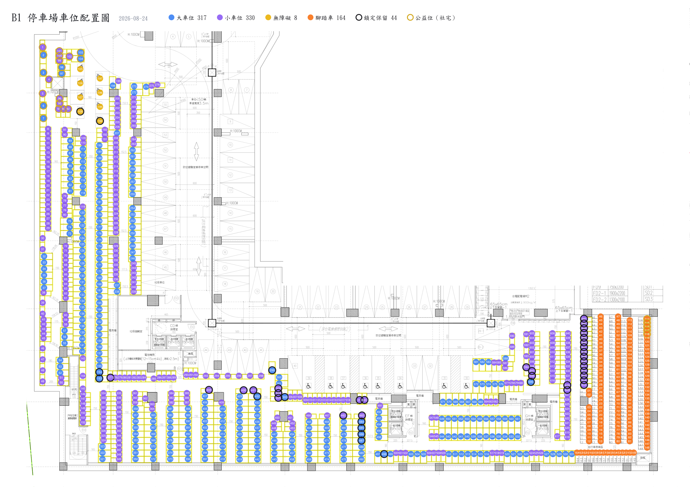

會前材料｜共 12 題＋管理辦法修訂 14 項
這次要決定的 12 題，含各題選項與建議案。先看這份。
辦法全文，紅字為異動處，共 14 項修正；四份附件附於文末。
搭配第 2、3 題參考。金框＝公益位、黑框＝鎖定不進抽籤。

第 2 題 車位數量：8/19 經理現場實勘定案，大 317／小 330／無障礙 8，合計 655 不變。經理清點的「大 325」是含無障礙 8 格，317＋8＝325，兩者一致。
第 4 題 換位費用：小組原案「一戶一次」，條文改為不設次數上限、每次收 100 元並得拒絕過於頻繁之申請，請確認採此寫法。
第 9 題 腳踏車架：小組原決議是「評估價格」，會後查證認為地下室屬防空避難空間、不得裝設固定設施，提請改為否決。